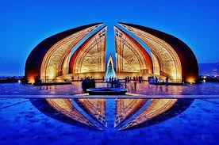

Introduction:
Pakistan, officially the Islamic Republic of Pakistan, is a country in South Asia. It is the world's fifth-most populous country with a population exceeding 212.2 million. It has the world's second-largest Muslim population. It is the 33rd-largest country by area, spanning 881,913 square kilometres.
Pakistan was ranked The Best Holiday Destination for 2020 and Pakistan was also declared the third highest Potential adventure destination in the world for 2020. As security in the country improves, tourism in Pakistan increases. In just a couple of years, tourism in Pakistan has increased by more than 300%!.Pakistan also launched online visa services for 175 countries and 50 countries were offered Visa on arrival,which made a tourism trip to Pakistan easier. Pakistan also received an influx of travel vloggers who showed the beauty of the country, especially the northern areas like Hunza and Skardu
beauty of pakistan
From the mighty stretches of the Karakorams in the North to the vast alluvial delta of the Indus River in the South, Pakistan remains a land of high adventure and nature. Trekking, mountaineering, white water rafting, wild boar hunting, mountain and desert jeep safaris, camel and yak safaris, trout fishing and bird watching, are a few activities, which entice the adventure and nature lovers to Pakistan.
Pakistan is endowed with a rich and varied flora and fauna. High Himalayas, Karakoram and the Hindukush ranges with their alpine meadows and permanent snow line, coniferous forests down the sub-mountain scrub, the vast Indus plain merging into the great desert, the coast line and wetlands, all offer a remarkably rich variety of vegetation and associated wildlife including avifauna, both endemic and migratory. Ten of 18 mammalian orders are represented in Pakistan with species ranging from the world's smallest surviving mammals, the Mediterranean Pigmy Shrew, to the largest mammal ever known; the blue whale.
Pakistan have world most beautiful places to visit, specially at its best in northern areas of Pakistan & Kashmir region. This part of the country is famous all around the world because of sky high mountains, lush green valleys, mighty rivers, beautiful lakes & amazing wild life.
{kind=link}
 Pakistan Monument, Islamabad, Pakistan
{kind=link}
{kind=link}
The country's attractions range from the ruin of Mohenjo-daro and Harappa to the Himalayan hill stations, for those interested in winter sports. Pakistan is home to several mountain peaks over 7000 m, which draw adventurers and mountaineers from around the world, especially K2. The north part of Pakistan has many old fortresses, ancient architecture and the Hunza, Chitral Valley, home to small Kalash people community and Fairy Meadows, Diamer District of Gilgit Baltistan. The romance of the historic Khyber Pakhtunkhwa province is timeless and legendary,[peacock term] Punjab province has the historic city Lahore, Pakistan's cultural capital, with many examples of Mughal architecture such as Badshahi Masjid, Shalimar Gardens, Tomb of Jahangir and the Lahore Fort.